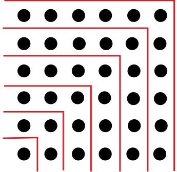
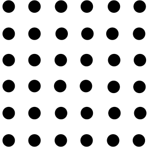

<!DOCTYPE html>
<html lang="en">
<head>
<meta charset="UTF-8">
<meta name="viewport" content="width=device-width,initial-scale=1">
<title>1.4 Relations among Number Sequences — Patterns in Mathematics</title>
<meta name="description" content="Class 6 Mathematics · Patterns in Mathematics · 1.4 Relations among Number Sequences">
<link rel="icon" href="data:image/svg+xml,<svg xmlns='http://www.w3.org/2000/svg' viewBox='0 0 100 100'><text y='.9em' font-size='90'>📘</text></svg>">
<link rel="stylesheet" href="../../../assets/book.css">
<link rel="stylesheet" href="https://cdn.jsdelivr.net/npm/katex@0.16.11/dist/katex.min.css" crossorigin="anonymous">
</head>
<body>
<header class="topbar">
<div class="topbar-in">
  <div class="crumb">
    <span class="c1"><a href="../../../index.html">Library</a> · <a href="../../index.html">Class 6 Mathematics</a></span>
    <span class="c2">Patterns in Mathematics · 1.4 Relations among Number Sequences</span>
  </div>
  <a class="tb-btn" data-nav="prev" href="../../01-patterns-in-mathematics/06-figure-it-out/index.html" title="Figure it Out">←</a>
  <details class="drawer"><summary class="tb-btn" title="Sections in this chapter">☰</summary>
<div class="drawer-panel"><div class="dh">Patterns in Mathematics</div><a href="../01-what-is-mathematics-1.1/index.html">1.1 What is Mathematics?</a><a href="../02-figure-it-out/index.html">Figure it Out</a><a href="../03-patterns-in-numbers-1.2/index.html">1.2 Patterns in Numbers</a><a href="../04-figure-it-out/index.html">Figure it Out</a><a href="../05-visualising-number-sequences-1.3/index.html">1.3 Visualising Number Sequences</a><a href="../06-figure-it-out/index.html">Figure it Out</a><a href="../07-relations-among-number-sequences-1.4/index.html" aria-current="page">1.4 Relations among Number Sequences</a><a href="../08-figure-it-out/index.html">Figure it Out</a><a href="../09-patterns-in-shapes-1.5/index.html">1.5 Patterns in Shapes</a><a href="../10-figure-it-out/index.html">Figure it Out</a><a href="../11-relation-to-number-sequences-1.6/index.html">1.6 Relation to Number Sequences</a><a href="../12-figure-it-out/index.html">Figure it Out</a><a href="../13-summary/index.html">Summary</a><a href="../14-solutions/index.html">CHAPTER 1 — SOLUTIONS</a></div></details>
  <a class="tb-btn" data-nav="next" href="../../01-patterns-in-mathematics/08-figure-it-out/index.html" title="Figure it Out">→</a>
  <button class="tb-btn" data-theme-toggle title="Toggle light / dark" aria-label="Toggle light or dark theme">◐</button>
</div>
<div class="progress"><span style="width:3.6%"></span></div>
</header>
<main class="wrap">
<div class="sec-head">
  <p class="eyebrow"><a href="../index.html">Chapter 1 · Patterns in Mathematics</a></p>
  <h1>1.4 Relations among Number Sequences</h1>
  <p class="sec-meta">Textbook pages 6–8 · 5 figures</p>
</div>
<article class="prose">
<p>Sometimes, number sequences can be related to each other in surprising ways.</p>
<p>Example: What happens when we start adding up odd numbers?</p>
<div class="mathblock"><p>\(1 = 1 1 + 3 = 4 1 + 3 + 5 = 9 1 + 3 + 5 + 7 = 16 1 + 3 + 5 + 7 + 9 = 25 1 + 3 + 5 + 7 + 9 + 11 = 36\)</p></div>
<p>...</p>
<p>This is a really beautiful pattern! Why does this happen? Do you think it will happen forever? The answer is that the pattern does happen forever. But why? As mentioned earlier, the reason why the pattern happens is just as important and exciting as the pattern itself.</p>
<p>A picture can explain it</p>
<p>Visualising with a picture can help explain the phenomenon. Recall that square numbers are made by counting the number of dots in a square grid. How can we partition the dots in a square grid into odd numbers of dots: 1, 3, 5, 7,... ? Think about it for a moment before reading further!</p>
<figure class="fig side-fig"></figure>
<p>Here is how it can be done:</p>
<figure class="fig"></figure>
<p>This picture now makes it evident that</p>
<div class="mathblock"><p>\(1 + 3 + 5 + 7 + 9 + 11 = 36\).</p></div>
<p>Because such a picture can be made for a square of any size, this explains why adding up odd numbers gives square numbers. By drawing a similar picture, can you say what is the sum of the first 10 odd numbers? Now by imagining a similar picture, or by drawing it partially, as needed, can you say what is the sum of the first 100 odd numbers?</p>
<p>Another example of such a relation between sequences: Adding up and down</p>
<p>Let us look at the following pattern:</p>
<div class="mathblock"><p>\(1 = 1 1 + 2 + 1 = 4 1 + 2 + 3 + 2 + 1 = 9 1 + 2 + 3 + 4 + 3 + 2 + 1 = 16 1 + 2 + 3 + 4 + 5 + 4 + 3 + 2 + 1 = 25 1 + 2 + 3 + 4 + 5 + 6 + 5 + 4 + 3 + 2 + 1 = 36\)</p></div>
<p>...</p>
<p>This seems to be giving yet another way of getting the square numbers - by adding the counting numbers up and then down!</p>
<p>Can you find a similar pictorial explanation?</p>
<figure class="fig"></figure>
</article>
<nav class="pager"><a class="" data-nav="prev" href="../../01-patterns-in-mathematics/06-figure-it-out/index.html"><span class="dir">← Previous</span><span class="t">Figure it Out</span><span class="ch">Patterns in Mathematics</span></a><a class="nx" data-nav="next" href="../../01-patterns-in-mathematics/08-figure-it-out/index.html"><span class="dir">Next →</span><span class="t">Figure it Out</span><span class="ch">Patterns in Mathematics</span></a></nav>
</main><footer class="site">Generated from the source textbook PDFs · text, figures and exercises belong to their respective publishers.</footer><script defer src="https://cdn.jsdelivr.net/npm/katex@0.16.11/dist/katex.min.js" crossorigin="anonymous"></script>
<script defer src="https://cdn.jsdelivr.net/npm/katex@0.16.11/dist/contrib/auto-render.min.js" crossorigin="anonymous"
  onload="renderMathInElement(document.body,{delimiters:[
    {left:'\\(',right:'\\)',display:false},
    {left:'$$',right:'$$',display:true},
    {left:'\\[',right:'\\]',display:true}],throwOnError:false,ignoredTags:['script','noscript','style','textarea','pre','code']})"></script>
<script src="../../../assets/book.js"></script>
<script defer src="../../../../assets/search.js?v=1789782769"></script>
<script defer src="../../../../assets/screenshot.js?v=1789782769"></script>
</body>
</html>
